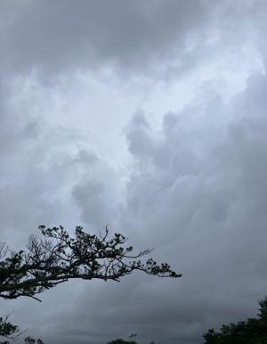
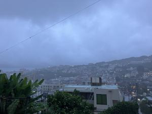
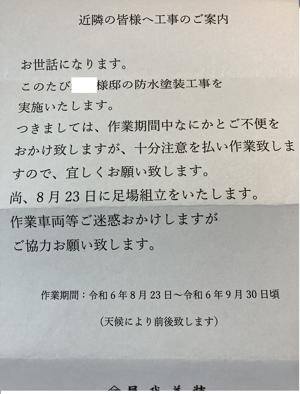

うるがいの話 ある日
最新: 防水塗装工事【うるがいの話 ある日】とは 一日だけのプログです
『うるがいの話』の最新一日だけのプログで、通信料が少なく経済的だ。カニの画像をクリックすると全ての日付が載る『うるがいの話』サイトを表示します
|
|
【うるがいの話】 うるがい(ｳﾙｶﾞｲ urugai)とは、『もずくがに』の名前でとても大きくなります。 |
|---|---|
|
|
【カミマヤーの話】 猫のことを方言でマヤーといいます。カミマヤー（kamimayaa）とは、神の猫のことです。 |
|
【たながぁの音楽】 たながぁ（ﾀﾅｶﾞｰ tanagaa）とは手長えびのことで、何種類かあり大きいのは車 エビぐらいになります。 |

|
【ぶながぁの話】 ぶながぁ(ﾌﾞﾅｶﾞｰ bunagaa)とは、赤い髪の毛、赤い身体、そして身長は１ｍ２０ｃｍ ぐらい、川の蟹を食べているの目撃された。場所は沖縄県国頭郡大宜味村のと ある村僕の隣近所に住んでいる爺さんから、聞いた話です。 |
|
|
【ギーマの話】 ギーマ(giima)とは、山原の里山に咲くスズランに似た、 花を付けます。実は食べられます、 気が付くと口の周りが紫になっています。 |
2024年10月05日 (土）防水塗装工事
15:16

きのう夕方に傘を持つのが面倒くさくて、持たずにジョギングへ行く。
ジョギングの最終、地獄坂で本降りになる。スマホで、雨雲を確認する
と雨宿りのレベルでない仕方なく、土砂降りになった道を歩く。玄関で
、濡れた上着をビニール袋にいれ、家に上がろうと玄関に足をつけた途
端、塗れた水で床にのった途端に足が滑り倒れる。倒れるとき、玄関の
角に左ひざの脛を打つ。少し腫れたようだが、今はアザもでず大丈夫で
ある。ヤバイっすね、気をつけねば。
１８時０４分 本格的な雨になったときの地獄坂 
近所で、８月１３日に足場を組み立て９月末で終わる予定だった。とこ
ろが、台風１３号が来るということで９月１３日（金）にネットなどを
外し台風対策をした。その後も、天気はあまり回復せず、ネットは外し
たまま、天気がいい時に工事をする。でもね、天気が悪くて・・・・。

きのうは大宜味村に大雨（土砂災害）警報がでていた。ダム貯水率を確
認すると９９．９％だった。明日からの天気予報では、いい天気が続い
ている。
１５時０８分 ビットコインの総資産 ￥２６、７４０（↑８３５）